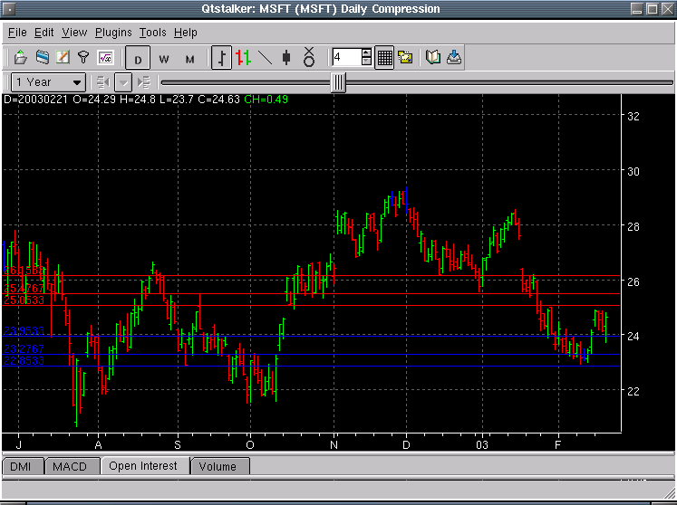

Pivot Point - PP

Parameters:
- Color Resistance - The resistance color
- Color Support - The support color
- Label First Resistance - The text to identify the first
resistance plot
- Label First Support - The text to identify the first support plot
- Label Second Resistance - The text to identify the second
resistance plot
- Label Second Support - The text to identify the second support
plot
- Label Third Resistance - The text to identify the third
resistance plot
- Label Third Support - The text to identify the third support plot
Description: